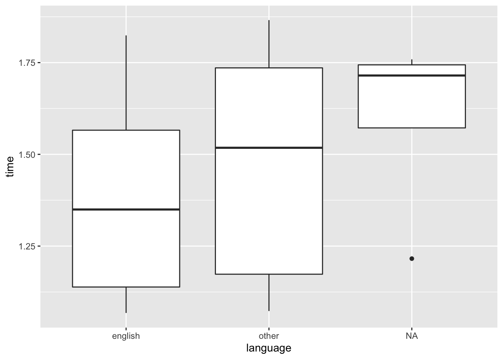

Chapter 5 Data Manipulation 2
In this section, well look at getting our data in the correct format for reporting your analyses. Well cover topics such as renaming and reordering variables, creating new variables, and creating summaries of your data. To do this, well use the dplyr package (Wickham et al. 2017) from the tidyverse (Wickham 2017).
Well cover the following functions that work with the group_by functioin:
arrange(): order variables (i.e.ordering in rows)select(): pick out variables (i.e.subsetting by columns, changing column order)filter(): pick out observations (i.e.subsetting by observations)mutate(): create new variablessummarise(): create a summary of variables (e.g.mean, SD, n)
The group_by function allows you to change the scope by which these functions work. For example, we can group our data by condition with group_by(condition) and then create summary statistics with summarise().
Additionally, well cover renaming variables with rename().
You should notice some familiar patterns with how we use and mix together these functions as we progress.
5.1 Getting Started
As always, we first need to load the tidyverse set of packages for this Chapter.
library(tidyverse)Next, well load the raw and (wide formatted) demographic data sets from the lexical decision experiment from the previous Chapter. To do so, well use read_csv() here, for reasons explained in the previous Chapter.
demo <- read_csv("inputs/lexical_decision_demographic_data_wide.csv")You should get a warning when loading the data, telling you how each column is parsed. We can specify during the loading process how to parse each column, for example setting strings to factors. However, well do this manually in dplyr() to give you more experience using this pacakge for mutating your data.
5.2 Understanding our Data
Lets look at the data weve just loaded to get an idea of how we want to change it. When we have many rows and we attempt to print a tibble, we wont see all columns in the console. One way to get an idea of how all columns look is to transpose these columns and take a look at the first few observations. To do this, we can use glimpse() to get a glimpse of our data.
glimpse(demo)## Rows: 29
## Columns: 14
## $ ID <chr> "22", "23", "24", "25", "26", "27", "28", "29", "30",
## $ `C++` <dbl> 1, 1, NA, 1, NA, NA, NA, NA, NA, 1, 1, NA, NA, NA, NA,
## $ FORTRAN <dbl> 1, NA, 1, 1, NA, 1, NA, NA, 1, 1, NA, NA, 1, NA, 1, NA
## $ JavaScript <dbl> 1, NA, NA, NA, NA, 1, NA, 1, NA, 1, NA, NA, NA, NA, 1,
## $ Python <dbl> NA, NA, NA, NA, 1, NA, NA, NA, NA, NA, NA, 1, NA, NA,
## $ R <dbl> NA, NA, NA, NA, NA, NA, 1, NA, NA, NA, NA, 1, 1, NA, N
## $ Ruby <dbl> NA, NA, NA, NA, 1, NA, 1, NA, NA, NA, NA, NA, NA, 1, N
## $ LANGUAGE <chr> "OTHER", NA, "ENGLISH", NA, "english", "ENGLISH", NA,
## $ progress <chr> "FINISH", "no", "END", "ethics", "ethics", "END", "eth
## $ gender <chr> "female", "male", "female", "male", "male", "female",
## $ age <dbl> 30, 30, 30, 18, 31, 44, 23, 34, 32, 33, 20, 31, 33, 36
## $ tester <chr> "GW", "GW", "GW", "GW", "GW", "GW", "GW", "GW", "GW",
## $ funRec <chr> "7-no", "6-yes", "4-yes", "0-no", "4-no", "5-no", "0-n
## $ completion_time <chr> "2018-03-22 23:06:11_2018-03-23 00:25:51", "2018-03-26As we can see, we have information on the subjects ID, columns indicating any programming languages they might know, a column specifying their language spoken, how far they got in the experiment, some demographic information, who tested them, whether they liked the experiment and would recommend it to others, and the start and end times for their part in the experiment.
We can also see how this data was parsed, with numeric columns as integers, and all other columns as characters. However, some of this data would be best represented as a different format. Well look into changing this later in this Chapter.
5.3 Preparing our Data
Our data is quite messy as it stands. One of the biggest issues is that we have two variables contained within one column for both the funRec and completion_time columns. Lets separate these two columns using the separate() function from tidyr.
demo <- demo %>%
separate(col = funRec, into = c("fun", "recommend")) %>%
separate(col = completion_time, into = c("start", "end"), sep = "_")
glimpse(demo)## Rows: 29
## Columns: 16
## $ ID <chr> "22", "23", "24", "25", "26", "27", "28", "29", "30", "A2",
## $ `C++` <dbl> 1, 1, NA, 1, NA, NA, NA, NA, NA, 1, 1, NA, NA, NA, NA, 1, 1
## $ FORTRAN <dbl> 1, NA, 1, 1, NA, 1, NA, NA, 1, 1, NA, NA, 1, NA, 1, NA, NA,
## $ JavaScript <dbl> 1, NA, NA, NA, NA, 1, NA, 1, NA, 1, NA, NA, NA, NA, 1, 1, N
## $ Python <dbl> NA, NA, NA, NA, 1, NA, NA, NA, NA, NA, NA, 1, NA, NA, 1, NA
## $ R <dbl> NA, NA, NA, NA, NA, NA, 1, NA, NA, NA, NA, 1, 1, NA, NA, NA
## $ Ruby <dbl> NA, NA, NA, NA, 1, NA, 1, NA, NA, NA, NA, NA, NA, 1, NA, NA
## $ LANGUAGE <chr> "OTHER", NA, "ENGLISH", NA, "english", "ENGLISH", NA, "engl
## $ progress <chr> "FINISH", "no", "END", "ethics", "ethics", "END", "ethics",
## $ gender <chr> "female", "male", "female", "male", "male", "female", "male
## $ age <dbl> 30, 30, 30, 18, 31, 44, 23, 34, 32, 33, 20, 31, 33, 36, 28,
## $ tester <chr> "GW", "GW", "GW", "GW", "GW", "GW", "GW", "GW", "GW", "RHB"
## $ fun <chr> "7", "6", "4", "0", "4", "5", "0", "6", "1", "4", "3", "1",
## $ recommend <chr> "no", "yes", "yes", "no", "no", "no", "no", "no", "yes", "y
## $ start <chr> "2018-03-22 23:06:11", "2018-03-26 00:30:20", "2018-03-21 1
## $ end <chr> "2018-03-23 00:25:51", "2018-03-26 02:15:52", "2018-03-21 15.4 Selecting Columns
First off, we should probably drop any columns from the data that we dont need to use. Were not going to look at the programming languages they know, so we can drop all of these columns using select(). Well create a subset of our data that doesnt contain these columns.
Here, well ask to keep all of the columns we want to keep. We can do this by name or column number.
# by name
demo %>% select(ID,
LANGUAGE,
progress,
gender,
age,
tester,
fun,
recommend,
start,
end
)## # A tibble: 29 10
## ID LANGUAGE progress gender age tester fun recommend start end
## <chr> <chr> <chr> <chr> <dbl> <chr> <chr> <chr> <chr> <chr>
## 1 22 OTHER FINISH female 30 GW 7 no 2018-03-22 2018
## 2 23 <NA> no male 30 GW 6 yes 2018-03-26 2018
## 3 24 ENGLISH END female 30 GW 4 yes 2018-03-21 2018
## 4 25 <NA> ethics male 18 GW 0 no 2018-03-25 2018
## 5 26 english ethics male 31 GW 4 no 2018-03-24 2018
## 6 27 ENGLISH END female 44 GW 5 no 2018-03-21 2018
## 7 28 <NA> ethics male 23 GW 0 no 2018-03-25 2018
## 8 29 english ethics male 34 GW 6 no 2018-03-24 2018
## 9 30 <NA> <NA> female 32 GW 1 yes 2018-03-22 2018
## 10 A2 English END female 33 RHB 4 yes 2018-03-23 2018
## # with 19 more rows# by number
demo %>% select(c(1, 8:16))## # A tibble: 29 10
## ID LANGUAGE progress gender age tester fun recommend start end
## <chr> <chr> <chr> <chr> <dbl> <chr> <chr> <chr> <chr> <chr>
## 1 22 OTHER FINISH female 30 GW 7 no 2018-03-22 2018
## 2 23 <NA> no male 30 GW 6 yes 2018-03-26 2018
## 3 24 ENGLISH END female 30 GW 4 yes 2018-03-21 2018
## 4 25 <NA> ethics male 18 GW 0 no 2018-03-25 2018
## 5 26 english ethics male 31 GW 4 no 2018-03-24 2018
## 6 27 ENGLISH END female 44 GW 5 no 2018-03-21 2018
## 7 28 <NA> ethics male 23 GW 0 no 2018-03-25 2018
## 8 29 english ethics male 34 GW 6 no 2018-03-24 2018
## 9 30 <NA> <NA> female 32 GW 1 yes 2018-03-22 2018
## 10 A2 English END female 33 RHB 4 yes 2018-03-23 2018
## # with 19 more rowsAlternatively, we could have just specified the columns we wanted to drop. To do so, we can tell R to select all columns, except (-) column numbers 2 through 7. Remember, we have to concatenate these values to apply tell R to remove all of these columns, and not just the first one.
This time, well save our data as demo_sub, as weve made a subset of our original demographic data.
demo_sub <- demo %>% select(-c(2:7))
demo_sub## # A tibble: 29 10
## ID LANGUAGE progress gender age tester fun recommend start end
## <chr> <chr> <chr> <chr> <dbl> <chr> <chr> <chr> <chr> <chr>
## 1 22 OTHER FINISH female 30 GW 7 no 2018-03-22 2018
## 2 23 <NA> no male 30 GW 6 yes 2018-03-26 2018
## 3 24 ENGLISH END female 30 GW 4 yes 2018-03-21 2018
## 4 25 <NA> ethics male 18 GW 0 no 2018-03-25 2018
## 5 26 english ethics male 31 GW 4 no 2018-03-24 2018
## 6 27 ENGLISH END female 44 GW 5 no 2018-03-21 2018
## 7 28 <NA> ethics male 23 GW 0 no 2018-03-25 2018
## 8 29 english ethics male 34 GW 6 no 2018-03-24 2018
## 9 30 <NA> <NA> female 32 GW 1 yes 2018-03-22 2018
## 10 A2 English END female 33 RHB 4 yes 2018-03-23 2018
## # with 19 more rowsThere are a number of helper functions in select() which can help you to stop having to explicitly mention every column you want to keep. These are:
starts_with("string"): this keeps any columns with names starting with stringends_with("string"): this keeps any columns with names ending with stringcontains("string"): this keeps any columns with names containing string at any pointmatches(regular_expression): this keeps any columns that match a regular expressionnum_range("prefix", range): this keeps any columns with a matching prefix and a following range of numbers. For example, `num_range(measurement, 1:3) would keep all columns called measurement1, measurement2, and measurement3.
For this simple case here, these arent necessary, but theyre good to know for working with larger data sets.
5.4.1 Renaming and Reordering Columns
We can use the rename() function to change our columns names. We have some messy names here, so well look at how we can rename them now. This renaming function takes the order of our new names are equal to our old names. Lets just overwrite our old subsetted data to change the names.
demo_sub <- demo_sub %>% rename(language = LANGUAGE)
demo_sub## # A tibble: 29 10
## ID language progress gender age tester fun recommend start end
## <chr> <chr> <chr> <chr> <dbl> <chr> <chr> <chr> <chr> <chr>
## 1 22 OTHER FINISH female 30 GW 7 no 2018-03-22 2018
## 2 23 <NA> no male 30 GW 6 yes 2018-03-26 2018
## 3 24 ENGLISH END female 30 GW 4 yes 2018-03-21 2018
## 4 25 <NA> ethics male 18 GW 0 no 2018-03-25 2018
## 5 26 english ethics male 31 GW 4 no 2018-03-24 2018
## 6 27 ENGLISH END female 44 GW 5 no 2018-03-21 2018
## 7 28 <NA> ethics male 23 GW 0 no 2018-03-25 2018
## 8 29 english ethics male 34 GW 6 no 2018-03-24 2018
## 9 30 <NA> <NA> female 32 GW 1 yes 2018-03-22 2018
## 10 A2 English END female 33 RHB 4 yes 2018-03-23 2018
## # with 19 more rowsFinally, what if we want to put the age and gender columns next to the ID column? We can use select() to pick out our first two columns, then everything() to grab every remaining column and stick them on the end.
demo_sub %>% select(ID, age, gender, everything())## # A tibble: 29 10
## ID age gender language progress tester fun recommend start end
## <chr> <dbl> <chr> <chr> <chr> <chr> <chr> <chr> <chr> <chr>
## 1 22 30 female OTHER FINISH GW 7 no 2018-03-22 2018
## 2 23 30 male <NA> no GW 6 yes 2018-03-26 2018
## 3 24 30 female ENGLISH END GW 4 yes 2018-03-21 2018
## 4 25 18 male <NA> ethics GW 0 no 2018-03-25 2018
## 5 26 31 male english ethics GW 4 no 2018-03-24 2018
## 6 27 44 female ENGLISH END GW 5 no 2018-03-21 2018
## 7 28 23 male <NA> ethics GW 0 no 2018-03-25 2018
## 8 29 34 male english ethics GW 6 no 2018-03-24 2018
## 9 30 32 female <NA> <NA> GW 1 yes 2018-03-22 2018
## 10 A2 33 female English END RHB 4 yes 2018-03-23 2018
## # with 19 more rows5.5 Creating and Changing Columns
If we want to create a new column in our data, or it we want to change how a column is represented, we have to mutate our data usingmutate().
What if we want to make a new column that tells us how long people spent on the experiment? We can create a new column by subtracting the start time of each participant from their end time.
# this will not run
# demo_sub <- demo_sub %>%
# mutate(time = end - start)Oops, that didnt work. Why not? It looks like the start and end columns are stored as characters. We cant perform a subtraction on a character, so we need to tell R that these are numbers. Specifically, we need to tell R that these are datetimes.
One package that makes this very easy is the lubridate package (Grolemund and Wickham 2011), which is designed to make working with datetimes very easy. Lets install this before we convert our start and end columns to datetimes.
library(lubridate)# install.packages("lubridate") # uncomment and run this only once
library(lubridate)The lubridate package has a number of useful functions that allow us to covert our data types to datetimes, as well as ways to run calculations on these times.
One function well use here is the ymd_hms() function, which converts data to the POSIXct format. The upshoot of this is that we can now subract one time from the other to get a duration.
Below, well mutate the start and end columns to be themselves, only converted to the proper datetime format. Well also create a new column, time, made up of subtracting the start times from the end times to get a duration.
demo_sub <- demo_sub %>%
mutate(start = ymd_hms(start),
end = ymd_hms(end),
time = end - start
)
glimpse(demo_sub)## Rows: 29
## Columns: 11
## $ ID <chr> "22", "23", "24", "25", "26", "27", "28", "29", "30", "A2",
## $ language <chr> "OTHER", NA, "ENGLISH", NA, "english", "ENGLISH", NA, "engli
## $ progress <chr> "FINISH", "no", "END", "ethics", "ethics", "END", "ethics",
## $ gender <chr> "female", "male", "female", "male", "male", "female", "male"
## $ age <dbl> 30, 30, 30, 18, 31, 44, 23, 34, 32, 33, 20, 31, 33, 36, 28,
## $ tester <chr> "GW", "GW", "GW", "GW", "GW", "GW", "GW", "GW", "GW", "RHB",
## $ fun <chr> "7", "6", "4", "0", "4", "5", "0", "6", "1", "4", "3", "1",
## $ recommend <chr> "no", "yes", "yes", "no", "no", "no", "no", "no", "yes", "ye
## $ start <dttm> 2018-03-22 23:06:11, 2018-03-26 00:30:20, 2018-03-21 11:09:
## $ end <dttm> 2018-03-23 00:25:51, 2018-03-26 02:15:52, 2018-03-21 12:16:
## $ time <drtn> 1.327778 hours, 1.758889 hours, 1.113889 hours, 1.690833 hoDid you notice that we can refer to columns weve asked to create within mutate() to create other columns? Pretty cool!
We can perform any number of operations on our columns in mutate(). But what if we want to do this and only keep the new columns? We can use transmute().
Below, well ask to keep the subject ID column, but to create our new start and end columns with mutate. Since the difference from the mean will (typically) be quite small, we can convert from hours to minutes by setting the units within our time variable to minutes.
# calculate difference from mean completion time
transmuted_time <- demo_sub %>%
mutate(
start = ymd_hms(start),
end = ymd_hms(end),
time = end - start
) %>%
transmute(
ID,
time_diff = time - mean(time)
)
# define the units of time, this can be mins, hours, days, etc.
units(transmuted_time$time_diff) <- "mins"
# print the object
transmuted_time## # A tibble: 29 2
## ID time_diff
## <chr> <drtn>
## 1 22 -7.185632 mins
## 2 23 18.681034 mins
## 3 24 -20.018966 mins
## 4 25 14.597701 mins
## 5 26 4.131034 mins
## 6 27 -22.785632 mins
## 7 28 17.481034 mins
## 8 29 8.147701 mins
## 9 30 -13.902299 mins
## 10 A2 -5.868966 mins
## # with 19 more rowsNote that we can change a column to many different data types by simply setting the column name to itself and the data type you want. For example, mutate(start = as.numeric(start)). We can also mutate multiple columns at once using mutate_all() or mutate_at(), but we wont cover this here. Check out the variants on the dplyr verbs to see how you can improve your code!
So far, weve learned how to create new columns, including keeping these with the original data set (mutate()) or keeping only the new columns (transmute()). Weve also seen how we can subset our data to the most relevant columns using select(). Next, well look at how we can subset our data by selecting certain observations (i.e.rows) within our data. For this, well use the filter() function.
5.6 Filtering to Observations
The filter() function allows us to filter our data to certain observations. We can use a number of logical operations to filter by certain conditions. As with the other dplyr functions, filter() must take the data as an argument, but afterwards it needs to take a rule by which to subset your data. Here, you just specify the conditons by which to keep observations. Nicely, the filter() argument can be piped, and used in conjunction with other dplyr functions.
Take a look at the demo_sub data set.
glimpse(demo_sub)## Rows: 29
## Columns: 11
## $ ID <chr> "22", "23", "24", "25", "26", "27", "28", "29", "30", "A2",
## $ language <chr> "OTHER", NA, "ENGLISH", NA, "english", "ENGLISH", NA, "engli
## $ progress <chr> "FINISH", "no", "END", "ethics", "ethics", "END", "ethics",
## $ gender <chr> "female", "male", "female", "male", "male", "female", "male"
## $ age <dbl> 30, 30, 30, 18, 31, 44, 23, 34, 32, 33, 20, 31, 33, 36, 28,
## $ tester <chr> "GW", "GW", "GW", "GW", "GW", "GW", "GW", "GW", "GW", "RHB",
## $ fun <chr> "7", "6", "4", "0", "4", "5", "0", "6", "1", "4", "3", "1",
## $ recommend <chr> "no", "yes", "yes", "no", "no", "no", "no", "no", "yes", "ye
## $ start <dttm> 2018-03-22 23:06:11, 2018-03-26 00:30:20, 2018-03-21 11:09:
## $ end <dttm> 2018-03-23 00:25:51, 2018-03-26 02:15:52, 2018-03-21 12:16:
## $ time <drtn> 1.327778 hours, 1.758889 hours, 1.113889 hours, 1.690833 hoYou can see that we have a number of columns, but crucially, we have one where we kept track of the subjects progress in our experiment. How many labels do we have for this? We can check for the unique labels in oru data using the unique() function. Alternatively, if our data is a factor, then it should have defined levels, so we could use the levels() function. To save time recoding our data types, well just use the unique() function for now.
unique(demo_sub$progress)## [1] "FINISH" "no" "END" "ethics" NAWe have a few labels: FINISH, no, END, ethics, and NA. It looks like we have a slightly messy data set, as both FINISH and END indicate the same point of progress; these subjects completed the experiment. If we just want to subset our data to those who finished the experiment, we could use these labels to filter out observations.
5.6.1 Filtering with Logical Operations
demo_sub %>% filter(progress == "FINISH" | progress == "END")## # A tibble: 23 11
## ID language progress gender age tester fun recom start
## <chr> <chr> <chr> <chr> <dbl> <chr> <chr> <chr> <dttm>
## 1 22 OTHER FINISH female 30 GW 7 no 2018-03-22 23:06:11
## 2 24 ENGLISH END female 30 GW 4 yes 2018-03-21 11:09:38
## 3 27 ENGLISH END female 44 GW 5 no 2018-03-21 03:23:57
## 4 A2 English END female 33 RHB 4 yes 2018-03-23 02:48:32
## 5 A3 Other END male 20 RHB 3 no 2018-03-25 23:56:13
## 6 C English END female 31 RHB 1 yes 2018-03-22 21:17:22
## 7 D Other END non-b 33 RHB 5 yes 2018-03-26 18:28:33
## 8 I Other END male 36 RHB 5 no 2018-03-26 01:23:54
## 9 J Other END female 28 RHB 6 yes 2018-03-21 04:15:50
## 10 K English END male 33 RHB 1 yes 2018-03-24 02:46:45
## # with 13 more rows, 2 more variables: end <dttm>, time <drtn>, and
## # abbreviated variable name recommendRead the above command like, filter to observations where the progress is equal to FINISH or the progress is equal to END. Remember, to check if something is equal to another thing, we have to use double equals (==) rather than a single equal (=) as a single equal is an assignment operator. Finally, the pipe between these two statements is an OR operator, so we keep any observations that are equal to FINISH or equal to END.
This type of filtering can get confusing if we have more than 2 conditions that we would like to check. One way around this is to use the %in% operator, which evaluates to TRUE if an observation is in a sequence that you provide. The best way to see how this works is to try it out yourself:
demo_sub %>% filter(progress %in% c("FINISH", "END"))## # A tibble: 23 11
## ID language progress gender age tester fun recom start
## <chr> <chr> <chr> <chr> <dbl> <chr> <chr> <chr> <dttm>
## 1 22 OTHER FINISH female 30 GW 7 no 2018-03-22 23:06:11
## 2 24 ENGLISH END female 30 GW 4 yes 2018-03-21 11:09:38
## 3 27 ENGLISH END female 44 GW 5 no 2018-03-21 03:23:57
## 4 A2 English END female 33 RHB 4 yes 2018-03-23 02:48:32
## 5 A3 Other END male 20 RHB 3 no 2018-03-25 23:56:13
## 6 C English END female 31 RHB 1 yes 2018-03-22 21:17:22
## 7 D Other END non-b 33 RHB 5 yes 2018-03-26 18:28:33
## 8 I Other END male 36 RHB 5 no 2018-03-26 01:23:54
## 9 J Other END female 28 RHB 6 yes 2018-03-21 04:15:50
## 10 K English END male 33 RHB 1 yes 2018-03-24 02:46:45
## # with 13 more rows, 2 more variables: end <dttm>, time <drtn>, and
## # abbreviated variable name recommendYou can see that we get the same result here, but we can easily add more and more values inside the parentheses to be evaluated.
We can combine multiple filtering arguments by different columns, too. What if we wanted to get only those who completed the experiment, were tested by RHB, and are over the age of 30?
5.6.2 Combining Filtering Criteria
demo_sub %>% filter(progress %in% c("FINISH", "END"),
tester == "RHB",
age > 30
)## # A tibble: 9 11
## ID language progress gender age tester fun recom start
## <chr> <chr> <chr> <chr> <dbl> <chr> <chr> <chr> <dttm>
## 1 A2 English END female 33 RHB 4 yes 2018-03-23 02:48:32
## 2 C English END female 31 RHB 1 yes 2018-03-22 21:17:22
## 3 D Other END non-bi 33 RHB 5 yes 2018-03-26 18:28:33
## 4 I Other END male 36 RHB 5 no 2018-03-26 01:23:54
## 5 K English END male 33 RHB 1 yes 2018-03-24 02:46:45
## 6 R1 English END female 31 RHB 6 yes 2018-03-21 19:23:38
## 7 R3 English END female 35 RHB 0 no 2018-03-22 16:40:33
## 8 V Other END male 37 RHB 7 no 2018-03-23 19:56:16
## 9 W1 English END non-bi 31 RHB 1 no 2018-03-26 11:28:20
## # with 2 more variables: end <dttm>, time <drtn>, and abbreviated variable
## # name recommend5.6.3 Removing by Ceriteria
Similarly to keeping those that match some crtieria, we can remove those who meet some criteria. Lets say we just want to look at those who havent finished the experiment. We can do this by using the ! (read: not) operator. Here, we ask to not keep those who have their progress as FINISH or END.
demo_sub %>% filter(!progress %in% c("FINISH", "END"))## # A tibble: 6 11
## ID language progress gender age tester fun recomm start
## <chr> <chr> <chr> <chr> <dbl> <chr> <chr> <chr> <dttm>
## 1 23 <NA> no male 30 GW 6 yes 2018-03-26 00:30:20
## 2 25 <NA> ethics male 18 GW 0 no 2018-03-25 13:03:58
## 3 26 english ethics male 31 GW 4 no 2018-03-24 06:46:30
## 4 28 <NA> ethics male 23 GW 0 no 2018-03-25 21:07:24
## 5 29 english ethics male 34 GW 6 no 2018-03-24 18:03:12
## 6 30 <NA> <NA> female 32 GW 1 yes 2018-03-22 04:16:08
## # with 2 more variables: end <dttm>, time <drtn>, and abbreviated variable
## # name recommend5.6.4 Handling NAs
We always need to be wary of NAs in R. If we ask R whether something is equal to an NA (an unknown value) it is very literal in that it tells us it cant know. Thats because R has no information about what the NA is! Try filtering our data to only those with NAs for the language known.
# this will not run
demo_sub %>% filter(language == NA)## # A tibble: 0 11
## # with 11 variables: ID <chr>, language <chr>, progress <chr>, gender <chr>,
## # age <dbl>, tester <chr>, fun <chr>, recommend <chr>, start <dttm>,
## # end <dttm>, time <drtn>Instead, we have to surround our variable with the is.na() function, to check whether these values are NAs.
demo_sub %>% filter(is.na(language))## # A tibble: 4 11
## ID language progress gender age tester fun recomm start
## <chr> <chr> <chr> <chr> <dbl> <chr> <chr> <chr> <dttm>
## 1 23 <NA> no male 30 GW 6 yes 2018-03-26 00:30:20
## 2 25 <NA> ethics male 18 GW 0 no 2018-03-25 13:03:58
## 3 28 <NA> ethics male 23 GW 0 no 2018-03-25 21:07:24
## 4 30 <NA> <NA> female 32 GW 1 yes 2018-03-22 04:16:08
## # with 2 more variables: end <dttm>, time <drtn>, and abbreviated variable
## # name recommendAlso note that by default filter() excludes cases that dont meet your criteria, or are NAs, so if you want to keep NAs you have to ask for them explicitly. Lets look at filtering to only those who finished the experiment (FINISH or END) and those who were unsure about (NA).
Here, we look for observations for progress that are equal to FINISH or equal to END or which are NAs.
demo_sub %>% filter(progress == "FINISH" | progress == "END" | is.na(progress))## # A tibble: 24 11
## ID language progress gender age tester fun recom start
## <chr> <chr> <chr> <chr> <dbl> <chr> <chr> <chr> <dttm>
## 1 22 OTHER FINISH female 30 GW 7 no 2018-03-22 23:06:11
## 2 24 ENGLISH END female 30 GW 4 yes 2018-03-21 11:09:38
## 3 27 ENGLISH END female 44 GW 5 no 2018-03-21 03:23:57
## 4 30 <NA> <NA> female 32 GW 1 yes 2018-03-22 04:16:08
## 5 A2 English END female 33 RHB 4 yes 2018-03-23 02:48:32
## 6 A3 Other END male 20 RHB 3 no 2018-03-25 23:56:13
## 7 C English END female 31 RHB 1 yes 2018-03-22 21:17:22
## 8 D Other END non-b 33 RHB 5 yes 2018-03-26 18:28:33
## 9 I Other END male 36 RHB 5 no 2018-03-26 01:23:54
## 10 J Other END female 28 RHB 6 yes 2018-03-21 04:15:50
## # with 14 more rows, 2 more variables: end <dttm>, time <drtn>, and
## # abbreviated variable name recommendAlternatively, we can filter our data to anything that is not an NA (or that does not meet any range of crieria). To do this, we use the ! logical operator (read this as not).
Similarly, we can combine turn this around and ask to not keep those that match the criteria above. Here, we have to ask to throw away those with progress that isnt FINISH and isnt END, and we want to throw out those with an NA for their progress.
demo_sub %>% filter(!progress %in% c("FINISH", "END") & !is.na(progress))## # A tibble: 5 11
## ID language progress gender age tester fun recomm start
## <chr> <chr> <chr> <chr> <dbl> <chr> <chr> <chr> <dttm>
## 1 23 <NA> no male 30 GW 6 yes 2018-03-26 00:30:20
## 2 25 <NA> ethics male 18 GW 0 no 2018-03-25 13:03:58
## 3 26 english ethics male 31 GW 4 no 2018-03-24 06:46:30
## 4 28 <NA> ethics male 23 GW 0 no 2018-03-25 21:07:24
## 5 29 english ethics male 34 GW 6 no 2018-03-24 18:03:12
## # with 2 more variables: end <dttm>, time <drtn>, and abbreviated variable
## # name recommend5.7 Arranging Data
Often, with psychological data, we want to order our columns by the subject number, then their observations. This makes it easy to think about how individuals progressed through the experiment.
We can arrange our data using arrange() from dplyr. Again, this function takes the data, and then sorts by any columns that you give it. This function defaults to having lowest mnumbers first. So, if we sorted by subject ID and trial ID, you would get the lowest value for subjects first, and their lowest number for trials first.
We have a simple case here, where we only have one observation for each participant. Here, numbers come before letters, but those with numbered IDs were tested at the end of the experiment. How, then, should we order the data?
One option is to order the data such that IDs appear in descending order (using the desc() function).
demo_sub %>% arrange(desc(ID))## # A tibble: 29 11
## ID language progress gender age tester fun recom start
## <chr> <chr> <chr> <chr> <dbl> <chr> <chr> <chr> <dttm>
## 1 Z Other END female 28 RHB 0 no 2018-03-21 12:33:04
## 2 W2 English END female 29 RHB 1 yes 2018-03-21 07:16:06
## 3 W1 English END non-b 31 RHB 1 no 2018-03-26 11:28:20
## 4 V Other END male 37 RHB 7 no 2018-03-23 19:56:16
## 5 T2 Other END male 27 RHB 0 yes 2018-03-25 10:40:49
## 6 T1 English END male 22 RHB 4 no 2018-03-24 12:08:05
## 7 S English END female 25 RHB 4 no 2018-03-21 04:04:38
## 8 R3 English END female 35 RHB 0 no 2018-03-22 16:40:33
## 9 R2 English END non-b 27 RHB 5 no 2018-03-26 08:15:03
## 10 R1 English END female 31 RHB 6 yes 2018-03-21 19:23:38
## # with 19 more rows, 2 more variables: end <dttm>, time <drtn>, and
## # abbreviated variable name recommendAlternatively, we know that the tester GW ran the experiment last, so we could sort by tester. But lets say that we want to sort by who tested them first, and then by who started the experiment first. To do this, we simply need to provide the start and tester columns to the function.
demo_sub %>% arrange(tester, start)## # A tibble: 29 11
## ID language progress gender age tester fun recom start
## <chr> <chr> <chr> <chr> <dbl> <chr> <chr> <chr> <dttm>
## 1 27 ENGLISH END female 44 GW 5 no 2018-03-21 03:23:57
## 2 24 ENGLISH END female 30 GW 4 yes 2018-03-21 11:09:38
## 3 30 <NA> <NA> female 32 GW 1 yes 2018-03-22 04:16:08
## 4 22 OTHER FINISH female 30 GW 7 no 2018-03-22 23:06:11
## 5 26 english ethics male 31 GW 4 no 2018-03-24 06:46:30
## 6 29 english ethics male 34 GW 6 no 2018-03-24 18:03:12
## 7 25 <NA> ethics male 18 GW 0 no 2018-03-25 13:03:58
## 8 28 <NA> ethics male 23 GW 0 no 2018-03-25 21:07:24
## 9 23 <NA> no male 30 GW 6 yes 2018-03-26 00:30:20
## 10 S English END female 25 RHB 4 no 2018-03-21 04:04:38
## # with 19 more rows, 2 more variables: end <dttm>, time <drtn>, and
## # abbreviated variable name recommendAgain, we can flip the order for tester by using the desc() function.
demo_sub %>% arrange(desc(tester), start)## # A tibble: 29 11
## ID language progress gender age tester fun recom start
## <chr> <chr> <chr> <chr> <dbl> <chr> <chr> <chr> <dttm>
## 1 S English END female 25 RHB 4 no 2018-03-21 04:04:38
## 2 J Other END female 28 RHB 6 yes 2018-03-21 04:15:50
## 3 M2 Other END female 27 RHB 4 no 2018-03-21 06:16:32
## 4 W2 English END female 29 RHB 1 yes 2018-03-21 07:16:06
## 5 Z Other END female 28 RHB 0 no 2018-03-21 12:33:04
## 6 R1 English END female 31 RHB 6 yes 2018-03-21 19:23:38
## 7 R3 English END female 35 RHB 0 no 2018-03-22 16:40:33
## 8 C English END female 31 RHB 1 yes 2018-03-22 21:17:22
## 9 A2 English END female 33 RHB 4 yes 2018-03-23 02:48:32
## 10 V Other END male 37 RHB 7 no 2018-03-23 19:56:16
## # with 19 more rows, 2 more variables: end <dttm>, time <drtn>, and
## # abbreviated variable name recommendNote: If we have missing values, these always come at the end of the table.
5.8 Summarising Data
Finally, we get onto the most important section for psychologists; how to report summaries of your data.
summarise() collapses across all observations in your data set to produce a single row of data. Within the summarise() function, we have to specify what we would like to create. To do this, we just use the same functions we would use to create a new column in our original data set.
Lets say we want to calculate the average time spent on the experiment. We just need to specify what our column will be called (mean_time here), and how we should create this column. Here, weve created it by calculating the mean() over the time column in our data.
demo_sub %>% summarise(mean_time = mean(time))## # A tibble: 1 1
## mean_time
## <drtn>
## 1 1.447538 hoursNow we know that the average completion time was 1.45 minutes. However, this doesnt tell us much. We might also want to know the standard deviation for the mean times, as well as the count (i.e.how many people completed the experiment). To do this, we just need to list more arguments.
To add these summaries, we use the inbuilt sd() function, as well as the inbuilt n() function. We dont pass anything to the n() function because it simply counts the number of observations over which weve summarised our data.
You dont need to understand the mutating part of this chain, but just know that it replaces the first cell in time with an NA.
demo_sub %>%
summarise(mean_time = mean(time),
sd_time = sd(time),
N = n()
)## # A tibble: 1 3
## mean_time sd_time N
## <drtn> <dbl> <int>
## 1 1.447538 hours 0.275 29Finally, we have to be wary of NAs when calculating our statistics with summarise(). Here, Ill introduce a missing value to our data before we calculate our summary.
demo_sub %>%
mutate(time = replace(time, 1, NA)) %>%
summarise(mean_time = mean(time),
sd_time = sd(time),
N = n()
)## # A tibble: 1 3
## mean_time sd_time N
## <drtn> <dbl> <int>
## 1 NA hours NA 29dplyr is strict, in that it will give you all NAs for the summary of a value if that value contains NAs. This is good as youll be aware if you have missing data before you report anything. To suppress this behaviour, we simply have to ask R to remove NAs when calculating the mean and standard deviation.
To remove NAs, we need to explicitly set na.rm = TRUE in the functions we use. Read this as Should I remove NAs? Yes!.
demo_sub %>%
mutate(time = replace(time, 1, NA)) %>%
summarise(mean_time = mean(time, na.rm = TRUE),
sd_time = sd(time, na.rm = TRUE),
N = n()
)## # A tibble: 1 3
## mean_time sd_time N
## <drtn> <dbl> <int>
## 1 1.451815 hours 0.280 295.9 Grouping Data
One of the most convenient functions in dplyr is the group_by function. This plays well with a number of the functions weve looked at above, but its most useful when calculating summaries.
In this experiment, we cared about reaction times for those who are native and non-native English speakers. But did their completion times differ at all? To save on splitting our data and calculating summaries on the subsets of data, we can instead group our data by the language spoken, and pass these both to the summary() function. We do this using group_by().
demo_sub %>%
group_by(language) %>%
summarise(mean_time = mean(time, na.rm = TRUE),
sd_time = sd(time, na.rm = TRUE),
N = n()
)## # A tibble: 6 4
## language mean_time sd_time N
## <chr> <drtn> <dbl> <int>
## 1 english 1.549861 hours 0.0473 2
## 2 English 1.417045 hours 0.266 11
## 3 ENGLISH 1.090833 hours 0.0326 2
## 4 Other 1.486389 hours 0.317 9
## 5 OTHER 1.327778 hours NA 1
## 6 <NA> 1.601111 hours 0.258 4As you can see, we got a summary by all of the groups in our language column. Unfortunately for us here, R doesnt identify groups with the same name but different capitalisation as the same group. To fix this, we can chain the functions weve used above before calculating our descriptive statistics.
Ill fix the names by setting the language column values to the language column values, only with all of the text in lowercase (using tolower() from baseR). This effectively overwrites the old values with our new, improved naming scheme.
demo_sub %>%
mutate(language = tolower(language)) %>%
group_by(language) %>%
summarise(mean_time = mean(time, na.rm = TRUE),
sd_time = sd(time, na.rm = TRUE),
N = n()
)## # A tibble: 3 4
## language mean_time sd_time N
## <chr> <drtn> <dbl> <int>
## 1 english 1.391259 hours 0.260 15
## 2 other 1.470528 hours 0.303 10
## 3 <NA> 1.601111 hours 0.258 4At a glance, there doesnt seem to be much of a difference in the completion time for the English and Other groups. However, for the NA group, subjects seem to take a little longer than the other two groups. Thats perhaps something we would look into if we wanted to analyse their data.
Finally, we can use group_by() along with other functions, such as filtering our data to the two participants with the lowest times from the language groups. Lets do that now.
To do this, we use another function from baseR called rank(). This rank orders all scores from the smallest to the largest value. Thus, if we group by language and filter to times with a rank of 1, we will filter to the lowest time in our language groups.
demo_sub %>%
mutate(language = tolower(language)) %>%
group_by(language) %>%
filter(rank(time) == 1) %>%
glimpse()## Rows: 3
## Columns: 11
## Groups: language [3]
## $ ID <chr> "27", "30", "J"
## $ language <chr> "english", NA, "other"
## $ progress <chr> "END", NA, "END"
## $ gender <chr> "female", "female", "female"
## $ age <dbl> 44, 32, 28
## $ tester <chr> "GW", "GW", "RHB"
## $ fun <chr> "5", "1", "6"
## $ recommend <chr> "no", "yes", "yes"
## $ start <dttm> 2018-03-21 03:23:57, 2018-03-22 04:16:08, 2018-03-21 04:15:5
## $ end <dttm> 2018-03-21 04:28:01, 2018-03-22 05:29:05, 2018-03-21 05:20:1
## $ time <drtn> 1.067778 hours, 1.215833 hours, 1.073056 hoursYou can see that we have times of around 1 hour for each group, which is below the means we calculated before.
5.9.1 Ungrouping Data
Finally, if you want to perform further operations on a set of data after youve initially grouped it, you can ungroup the data using ungroup() prior to running further calculations.
Below, we remove the quickest people in each group before calculating the grand mean.
demo_sub %>%
mutate(language = tolower(language)) %>%
group_by(language) %>%
filter(rank(time) != 1) %>%
ungroup() %>%
summarise(mean_time = mean(time, na.rm = TRUE),
sd_time = sd(time, na.rm = TRUE),
N = n()
)## # A tibble: 1 3
## mean_time sd_time N
## <drtn> <dbl> <int>
## 1 1.485459 hours 0.264 265.10 Chaining Many Functions
As you saw before, our data wasnt exactly tidy when we first loaded it. We can avoid a lot of intermediate steps, and make some of the processes weve went through above if we just chain our functions together. Here, well tidy up our data before calculating some descriptive statistics.
# load package
library(lubridate)
# load, clean, and transform data
demo_clean <- read_csv("inputs/lexical_decision_demographic_data_wide.csv") %>%
separate(col = funRec, into = c("fun", "recommend")) %>%
separate(col = completion_time, into = c("start", "end"), sep = "_") %>%
select(c(1, 8:16)) %>%
rename(language = LANGUAGE) %>%
mutate(start = ymd_hms(start),
end = ymd_hms(end),
time = end - start,
language = tolower(language)
)In one step, weve used several of the commands that we used above to clean our data and to get it in the correct format for what we want to do with it. We can then pass this cleaned data to our group_by() and summarise() functions to generate summaries as before.
demo_clean %>%
group_by(language) %>%
summarise(mean_time = mean(time, na.rm = TRUE),
sd_time = sd(time, na.rm = TRUE),
N = n()
)## # A tibble: 3 4
## language mean_time sd_time N
## <chr> <drtn> <dbl> <int>
## 1 english 1.391259 hours 0.260 15
## 2 other 1.470528 hours 0.303 10
## 3 <NA> 1.601111 hours 0.258 4Or we can even plot the data using the pipe (%>%) with ggplot2. Notice that the ggplot elements end the line in a + not a %>%.
demo_clean %>%
ggplot(mapping = aes(x = language, y = time)) +
geom_boxplot()## Don't know how to automatically pick scale for object of type difftime. Defaulting to continuous.
There are some helper functions we havent covered here that might help you out with dplyr, but you should have most of what you need now to do the majority of your data processing tasks.
5.11 Saving Data
Finally, we should look at saving our data. There are a few ways we can do this.
5.11.1 CSV Files
One way is to save your data as a .csv file, in a similar format to the data you loaded into R. However, this way we lose any customised data types (such as start and end times being POSIXct) if we are to load the data back up into R. Still, its always good to have a copy of your data that is platform agnostic, so we should save it as a .csv so other people can load it up with any program they like. This format is also good for exploring your data in excel.
Well save our data in the outputs folder as a csv, using the write_csv() function from readr (Wickham, Hester, and Francois 2017), a part of the tidyverse (Wickham 2017).
To save the data, we just need to specify the object to save (the table of your data) in the write_csv() function, along with the path to save the data. Here, weve specified that we want to save the data in the ouputs folder, and then given it a name. Folders are separated by a forwardslash, with the last string of text representing the file name. File names must end with .csv to specify the file type.
write_csv(demo_clean, "outputs/filtered_demographic_data.csv")We could also save the data as an excel file, but its generally best to keep platform agnostic for your data backups. If you want to save your data in a useful format for further manipulation, save it as an RData file! That way, you can keep using R to work with your objects.
5.11.2 R Data Files
You dont want to re-run all of your pre-analysis code every time you want to make a graph/model data, so saving your data after cleaning it up is generally a good idea. However, some of the R-specific information can get lost when saving as a .csv or other format (e.g.dates will be re-loaded as characters unless otherwise specified). Instead, we can save as an RData file which retains this information. Additionally, RData files generally take up less space on your hard drive than a .csv. Finally, we can save object types which dont play well with .csv and other formats in an RData file, such as model outputs and nested data sets (which is pretty advanced; think of a table of data within each cell of a larger table).
Here, we will save our data as an .RData file, which we can then load up again in R for further processing. To do so, we need to specify the object(s) to save (we can save several in one data file!), and we need to specify the file as above. Here, we need to be specific by using the file argument to define where to save our data.
save(demo_clean, file = "outputs/filtered_demographic_data.RData")When it comes to loading RData files back up, we just need to use the load() function from baseR. Bear in mind that the names of the objects youve saved in the data file will be the same ones you see on loading, so use informative names! Here, we just need to specify the path from which to load our data.
load("outputs/filtered_demographic_data.RData")5.12 Exercises
Well try some exercises to get you used to using all of the functions weve discussed here.
For these exercises well a simulated data set I created in the data_generation folder which is saved to the inputs folder as sim_data.RData. This data was saved as a tibble in the RData file, so we just use load() to open this data into R.
# load libraries
library(tidyverse)
library(lubridate)
# load data
load("inputs/sim_data.RData")This data set looks at reaction times in spotting a target when people have had caffeine or not, and when they respond with their dominant or non-dominant hand. This data set is entirely made up, so we cant be sure how realistic these results are.
First, you should take a look at your data to understand it. A simple first step is to see what the data table itself looks like.
glimpse(data)## Rows: 100
## Columns: 5
## $ subject <int> 1, 2, 3, 4, 5, 6, 7, 8, 9, 10, 11, 12, 13, 14, 15, 16, 17, 18
## $ age <int> 34, 56, 23, 53, 44, 21, 55, 47, 29, 31, 35, 56, 34, 62, 56, 2
## $ caffeine <fct> no, no, no, no, no, no, no, no, no, no, no, no, no, no, no, n
## $ response <fct> non-dominant, non-dominant, non-dominant, non-dominant, non-d
## $ DV <dbl> 398.6627, 396.3824, 400.1234, 401.9182, 397.6403, 398.8435, 3After this, we should make a more detailed plot to understand the general trends in the data.
5.12.1 Question 1
Make a plot of your data which looks at the relationship beween caffeine and DV. Split this plot into two to show the differences across the two response conditions.
What are the general trends in the data?
5.12.4 Question 4
What if we care about differences in the ages? Lets assume we have a prediction that caffeine only has an effect on those above 30 years of age. Subset your data to just those above 30 years of age.
5.12.6 Question 6
Calculate mean centered scores for each subject and add these to a new column called DV_c (DV, centered). The formula for this is subjects_score - mean(all_scores). Can you work out what the mean should (approximately) be?
5.12.7 Question 7
Lets assume we have a prediction that response times should be slower above 30 years of age. Create a new column, age_group that puts participants into two groups 30_or_under, and above_30.
Hint: Look up the ifelse() function using ?ifelse() to see how you can use logical operations to achieve this.
5.12.8 Question 8
Calculate the mean, standard deviation, and number of observations for each group.
5.12.9 Question 9
Calculate the mean, standard deviation, and number of observations for each group, excluding those with the 3 highest ages from each group.
5.12.10 Question 10
Take the data and do this all together:
- Rename the DV column to response_time.
- Remove any observations where the age of the participant is above 60.
- Combine the two columns, age and caffeine, into one column called condition. Hint: Use
paste()here. Use an underscore separator for the condition names. - Remove the caffeine and response columns and reorder the data so we have subject first, followed by age, condition, and response_time.
- Calculate mean, standard deviation, and n for condition on the response time column. Call your new column names anything sensible.